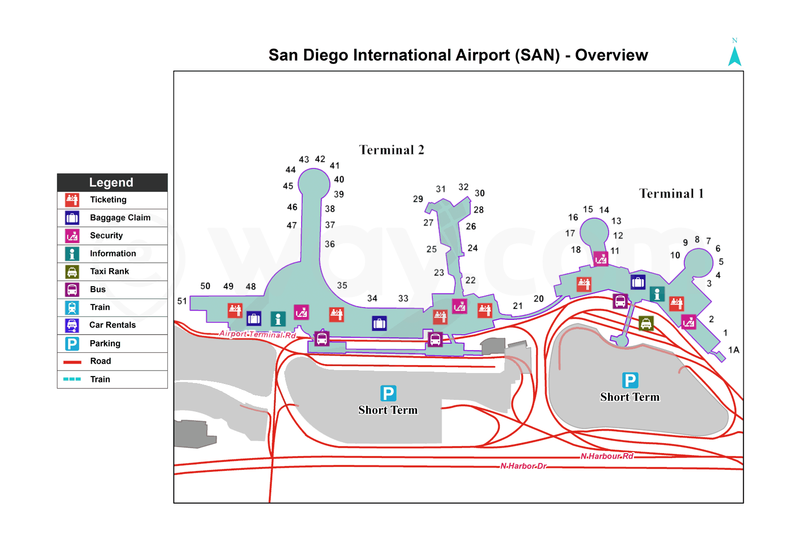

கண்ணோட்டம்
- சான் டியாகோ சர்வதேச விமான நிலையத்தின் இணையதளம்
- டெர்மினல் 1ல் ஒரு தளம் உள்ளது
-
டெர்மினல் 2 இரண்டு தளங்களைக் கொண்டுள்ளது
- முதல் தளம் சாமான்களுக்கான உரிமைகோரல்/வருகை ஆகும்.
-
இரண்டாவது தளம் TSA/பாதுகாப்பு மற்றும் புறப்பாடு ஆகும். இது இரண்டு பிரிவுகளாக பிரிக்கப்பட்டுள்ளது மற்றும் ஒரு பிரிவில் இருந்து மற்றொன்றுக்கு செல்ல, நீங்கள் ஒன்று வேண்டும்
- கீழே போ
- இரண்டாவது மாடியில் வெளியே நடக்க
-
டெர்மினல் 2 வழியாக விமான நிலையத்திற்குள் நுழைய பரிந்துரைக்கிறோம்.
நீங்கள் விமான நிலையத்தை எதிர்கொண்டால்:- பெற இடதுபுறம் செல்க: யுனைடெட், ஜெட் ப்ளூ, டெல்டா
- பெற வலதுபுறம் செல்க: அலாஸ்கா, அமெரிக்கன்
- கீழே சென்று வலதுபுறமாக (சுமார் 10 நிமிடங்கள்) நடக்கவும்: முனையம் 1 (எல்லை, ஸ்பிரிட், தென்மேற்கு)
- விமான டிக்கெட்டை ஆன்லைனில் வாங்குவது நல்லது. சில விமான நிறுவனங்கள் மட்டுமே கவுன்டரில் டிக்கெட் வாங்க அனுமதிக்கும், பொதுவாக கட்டணம் உண்டு. டிக்கெட் கவுன்டர்கள் பணத்தை ஏற்கவில்லை.
- விமான நிலைய வைஃபை, எஸ்கலேட்டருக்கு அருகில் டெர்மினல் 2ல் வலுவாக உள்ளது. விமான டிக்கெட்டுகளை முன்பதிவு செய்யும் போது சிறந்த இணைய இணைப்புக்கு அங்கு செல்லவும்.
சான் டியாகோ சர்வதேச விமான நிலையத்தின் வரைபடங்கள்
சான் டியாகோ சர்வதேச விமான நிலையத்தின் ஊடாடும் வரைபடத்தைக் காண கிளிக் செய்யவும்
சான் டியாகோ சர்வதேச விமான நிலையத்தின் நிலையான வரைபடம் 1 ஐக் காண கிளிக் செய்யவும்
சான் டியாகோ சர்வதேச விமான நிலையத்தின் நிலையான வரைபடம் 2 ஐக் காண கிளிக் செய்யவும்

தொண்டர்கள்
- தன்னார்வலர்கள் காலை (8 மணி முதல் 11 மணி வரை) அல்லது மாலையில் (மாலை 5 மணி முதல் இரவு 10 மணி வரை) விமான நிலையத்திற்கு வரலாம். அவர்கள் விமான நிலையம் முழுவதும் நடந்து செல்வார்கள்
- தன்னார்வலர்களுக்கு இலவச உணவு மற்றும் கோப்பைகள் இருக்கும், விமான நிலையத்தின் நீர் நீரூற்றுகளில் நீங்கள் தண்ணீரை நிரப்பலாம்.
- தன்னார்வலர்கள் இலவச ஆடைகள், சுகாதார பொருட்கள் (பல் துலக்குதல், ஈரமான துடைப்பான்கள், மாதவிடாய் பொருட்கள், டயப்பர்கள்), போர்வைகள் ஆகியவற்றைக் கொண்டிருக்கலாம்.
- ரோலிங் வேகன் அல்லது வண்டி உள்ளவர்களைத் தேடுங்கள், அவர்கள் நீலம் அல்லது பச்சை நிற உள்ளாடைகளை அணிந்திருக்கலாம்
- உங்கள் விமானத்தை எங்கே கண்டுபிடிப்பது, போர்டிங் பாஸ்/டிக்கெட்டை எப்படிப் பெறுவது, உங்கள் விமானம் எப்போது
- நீங்கள் இரவில் விமான நிலையத்தில் தங்குகிறீர்களா? தயவுசெய்து எங்களுக்கு தெரியபடுத்து. நீங்கள் ஒரே இரவில் தூங்குவதற்கு எங்களிடம் ஒரு இடம் இருக்கலாம்
- உங்களுக்கு உடம்பு சரியில்லையா அல்லது மருத்துவ உதவி தேவையா? ஒரு தன்னார்வலரிடம் சொல்லுங்கள், அவர்கள் உங்களுக்கு உதவ முயற்சிப்பார்கள்
- உங்கள் விமானம் ரத்து செய்யப்பட்டதா மற்றும் கத்தோலிக்க தொண்டு நிறுவனங்கள் அல்லது யூத குடும்ப சேவைகள் உங்களுக்கு உதவி செய்ததா? நாங்கள் உங்களை CC அல்லது JFS உடன் இணைக்க முடியும்
குளியலறைகள்
- குளியலறைகள் விமான நிலையம் முழுவதும் அமைந்துள்ளன
- கழிப்பறைக்குள் ஈரமான துடைப்பான்களை கழுவ வேண்டாம்
மின் நிலையங்கள்
- விமான நிலையம் முழுவதும் விற்பனை நிலையங்கள் உள்ளன. முதல் தளத்தில் அதிக விற்பனை நிலையங்கள் உள்ளன
- முதல் மாடியில் உள்ள நாற்காலிகளில் நீங்கள் தூங்கலாம்
விமான நிலைய கடைகள் மற்றும் உணவகங்கள்
- பெரும்பாலான கடைகள் மற்றும் உணவகங்கள் இரவு 8 மணிக்குள் மூடப்படும்
- டெர்மினல் 1 இல் உள்ள ஜாக் இன் தி பாக்ஸில் கடைசியாக (இரவு 8 மணி) மூடப்படும் உணவகம்
- விமான நிலையத்தில் சிகரெட் விற்பனை இல்லை
- ஜாக் இன் தி பாக்ஸுக்கு அருகிலுள்ள டெர்மினல் 1 இல் உள்ள கடையில் நீங்கள் சிம் கார்டை வாங்கலாம்
பணம்
- விமான நிலையத்தில் நாணய பரிமாற்றம் இல்லை
-
விமான நிலையத்தில் வெஸ்டர்ன் யூனியன் இல்லை. வெஸ்டர்ன் யூனியனுக்குச் செல்ல ஓல்ட் டவுன் ஸ்டேஷனுக்கு நீங்கள் ஷட்டில் செல்ல வேண்டும்.
- மேலும் அறிய ஓல்ட் டவுன் ஸ்டேஷன் பக்கத்தைப் பார்க்கவும்
-
"ரெடி கார்டு" இயந்திரங்கள் என்று அழைக்கப்படும் இயந்திரங்கள் உள்ளன. அவர்கள் உங்கள் பணத்தை முன்பணம் செலுத்திய டெபிட் மாஸ்டர்கார்டுக்கு $6 கட்டணத்திற்கு மாற்றுவார்கள்
- மொத்தம் ஆறு ரெடி ஸ்டேஷன்கள் உள்ளன, அவை டிக்கெட் கவுன்டர்களுக்கு அருகில் அமைந்துள்ளன. நீங்கள் முன்பணம் செலுத்திய டெபிட் மாஸ்டர்கார்டைப் பெற்றவுடன், உங்கள் விமான டிக்கெட்டை டிக்கெட் கவுன்டர்களில் அல்லது ஆன்லைனில் வாங்கலாம்.
-
ரெடி ஸ்டேஷன் இயந்திரத்தைப் பயன்படுத்துவதற்கான வழிமுறைகள்:
- தொடங்குவதற்கு நிலையத்தைக் கண்டுபிடித்து திரையைத் தொடவும்.
- ஒரு முக்கியமான தகவல் செய்தி திரையில் தோன்றும், தொடர ஏற்கவும் என்பதைக் கிளிக் செய்யவும். ப்ரீபெய்ட் டெபிட் கார்டில் அதிகபட்சமாக $1,000 ஏற்ற முடியும்.
- ப்ரீபெய்ட் டெபிட் கார்டை வாங்கவும், பணத்தை ஏற்றவும் "வாங்கு" என்பதைக் கிளிக் செய்யவும்.
- இயந்திரத்தில் விரும்பிய பணத்தைச் செருகவும். நீங்கள் $100 ஐ உள்ளிட்டால், கார்டு இருப்பு $94 ஆகும்.
- பணத்தைச் செருகி முடித்தவுடன், திரையில் உள்ள "முடிந்தது" பொத்தானைக் கிளிக் செய்யவும்.
-
அட்டையில் உள்ள தொகை சரியான தொகை என்பதை உறுதிப்படுத்தவும்.
- தொகை சரியாக இருந்தால், "DONE - ISSUE CARD" பட்டனை கிளிக் செய்யவும்.
- நீங்கள் அதிக பணம் சேர்க்க விரும்பினால், "மேலும் பணத்தைச் சேர்" பொத்தானைக் கிளிக் செய்யவும்.
- பரிவர்த்தனை முடிந்தது. அட்டையை எடு.
- இரண்டு டெர்மினல்களிலும் ஏடிஎம்கள் உள்ளன
- விமான டிக்கெட் கவுன்டர்கள் பணத்தை ஏற்கவில்லை
தங்குமிடம்
உங்களிடம் விமான டிக்கெட்டுகள் இல்லை மற்றும் தங்குவதற்கு இடம் தேவைப்பட்டால், 299 17வது தெருவில் உள்ள சான் டியாகோ (நீல் குட்) டே சென்டர்தான் அருகில் உள்ள சான் டியாகோ தங்குமிடம்.
- சான் டியாகோ (நீல் குட்) டே சென்டர் திங்கள் முதல் வெள்ளி வரை காலை 7 மணி முதல் மாலை 3 மணி வரை திறந்திருக்கும்
- இடம் குறைவாக உள்ளது - இடத்தைப் பாதுகாக்க காலை 6 மணிக்குள் அங்கு செல்ல முயற்சிக்கவும்.
- சான் டியாகோ (நீல் குட்) டே சென்டரில் ஓய்வறைகள், சலவை மற்றும் செல்போன் சார்ஜ் செய்யும் பகுதிகள் உள்ளன.
விமான நிலையத்திலிருந்து சான் டியாகோ (நீல் குட்) நாள் மையத்திற்கான திசைகள்
- பஸ் பகுதிக்கு வெளியே நடக்கவும்
- பஸ் 992 ஐக் கண்டறியவும்
- 11வது அவென்யூ & பிராட்வேக்கு பேருந்தில் செல்லவும்
- பிராட்வே & பார்க் பவுல்வர்டு நிறுத்தத்திற்கு நடக்கவும்
- 12 பேருந்தில் செல்லவும்
- இம்பீரியல் அவென்யூ மற்றும் 16வது அவென்யூவில் இறங்கவும்
- 299 17வது அவென்யூவில் வரிசையாக நிற்கவும்
மலிவு விலை மோட்டல்
நீங்கள் ஒரு இரவுக்கு சுமார் $120 வாங்கினால், நீங்கள் EZ 8 மோட்டலைக் கருத்தில் கொள்ளலாம். மேலும் அறிய ஓல்ட் டவுன் ஸ்டேஷன் பக்கத்தைப் பார்க்கவும் .
TSA/பாதுகாப்பு
அமெரிக்காவிற்குள் விமானத்தில் ஏற விரும்பும் அனைத்து நபர்களும் TSA செயல்முறைகள் மற்றும் விதிமுறைகளுக்கு உட்பட்டவர்கள்.
- TSA இன் இணையதளத்தில் பயனுள்ள பக்கங்கள்
- நீங்கள் பாதுகாப்பு மூலம் அதிக அளவு திரவங்களை கொண்டு வர முடியாது (88 மில்லிலிட்டர்களுக்கு மேல் இல்லை)
- வெற்று தண்ணீர் பாட்டில்களை எடுத்து வரலாம்
- உங்களிடம் காலாவதியாகாத பாஸ்போர்ட் இருந்தால், உங்களுக்கு விமான டிக்கெட்/போர்டிங் பாஸ் மற்றும் பாஸ்போர்ட் மட்டுமே தேவை
- உங்களிடம் பாஸ்போர்ட் இல்லையென்றால், உங்களுடைய விமான டிக்கெட்/போர்டிங் பாஸ் மற்றும் உங்களின் குடியேற்ற ஆவணங்கள் (CBP அல்லது ICE இலிருந்து) தேவை.
- உங்கள் காலணிகள், ஜாக்கெட், பெல்ட் அல்லது தொப்பியை அகற்ற வேண்டியிருக்கலாம்
- உங்கள் விமானத்திற்கு குறைந்தது 2 மணிநேரம் முன்னதாக பாதுகாப்புக்காக வரிசையில் நிற்கவும்